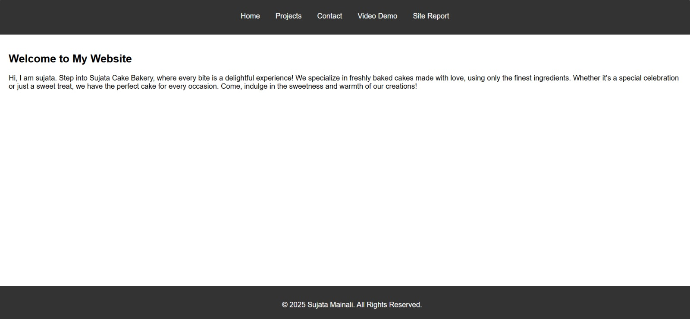
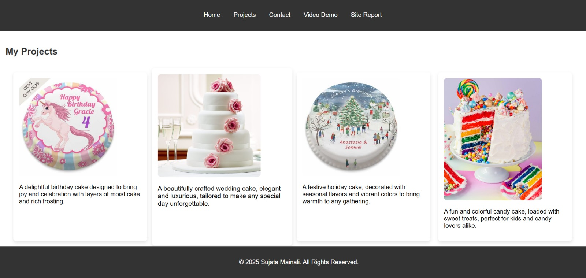

Creating this website has been an insightful journey into the basics of web development. I learned how to structure web pages using HTML, enhance visual appeal with CSS, and improve user interaction. At first, understanding the different HTML elements and their correct usage was a bit overwhelming, but as I practiced, it became easier.
One of the biggest challenges was debugging CSS issues, especially with responsive design. Ensuring the site looked good on different screen sizes required using media queries and flexbox. Validating my HTML and CSS helped me fix syntax errors and improve accessibility.
I chose a warm, inviting color scheme using shades of yellow and brown, which represent baked goods and create a friendly atmosphere. The fonts were selected to be both elegant and readable. My design was inspired by bakery websites such as Patisserie Valerie, which helped me decide on the layout and typography.
Below are the validation results from W3C HTML and CSS Validators:
 Watch the video demonstration of my website: